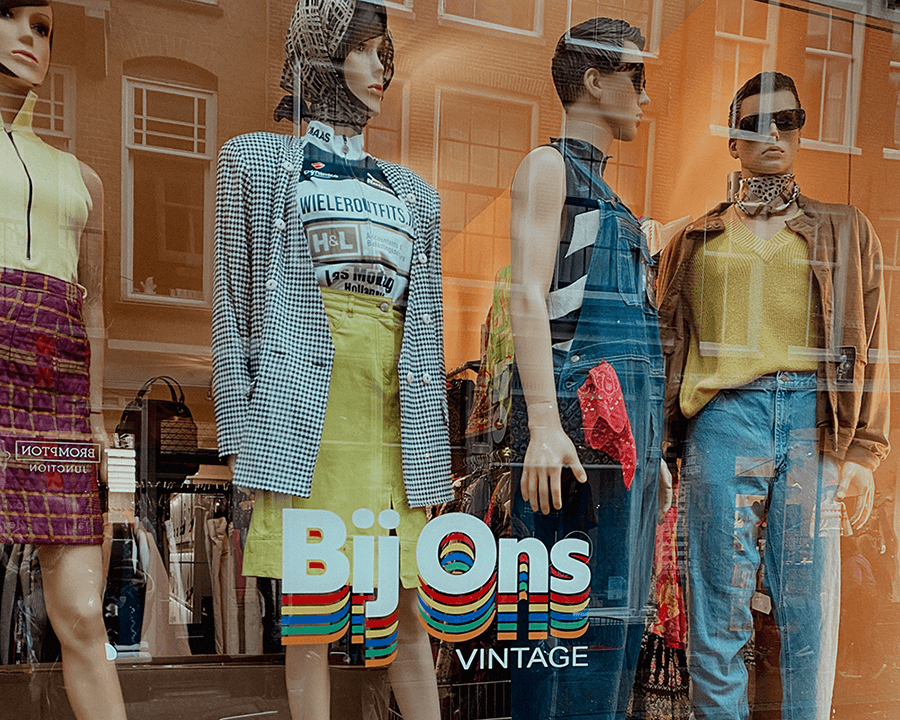

Bente's Insights
Welkom
Vintage winkels, duurzaamheid, locaties en meer. Bente's Insights verzamelt de leukste vintagewinkels voor jou. Deze keer behandel ik de vintagewinkel Bij Ons Vintage. Lees mijn blogs en je blijft op de hoogte van de meest trendy vintageshops. Ben jij benieuwd waarom Bij Ons Vintage zo duurzaam is? Lees dan vooral verder!
